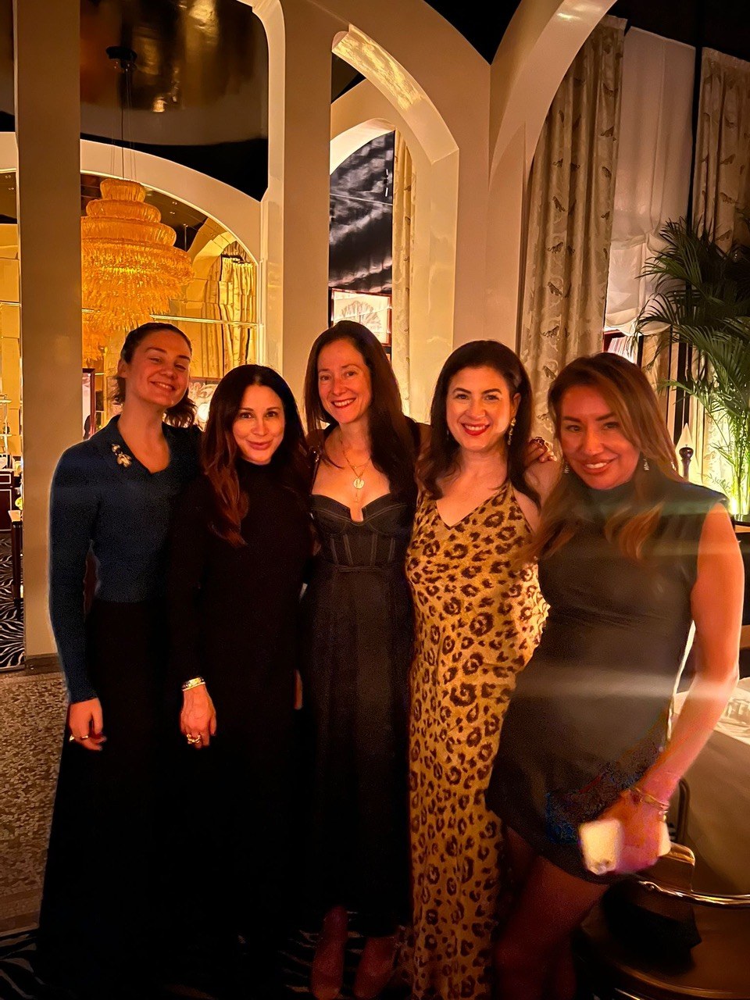
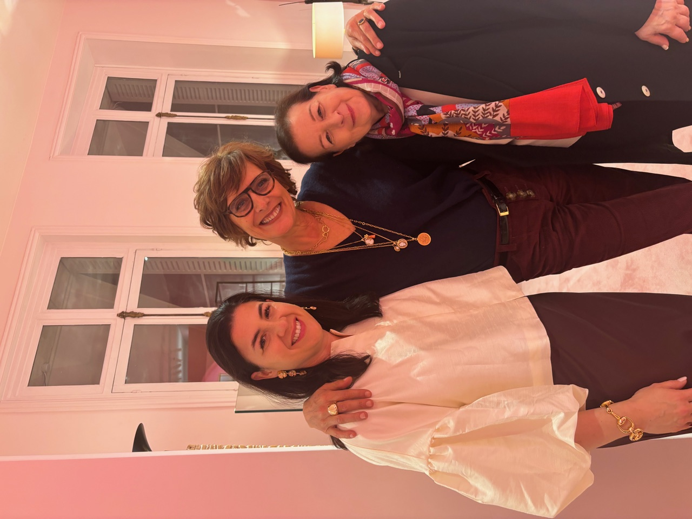
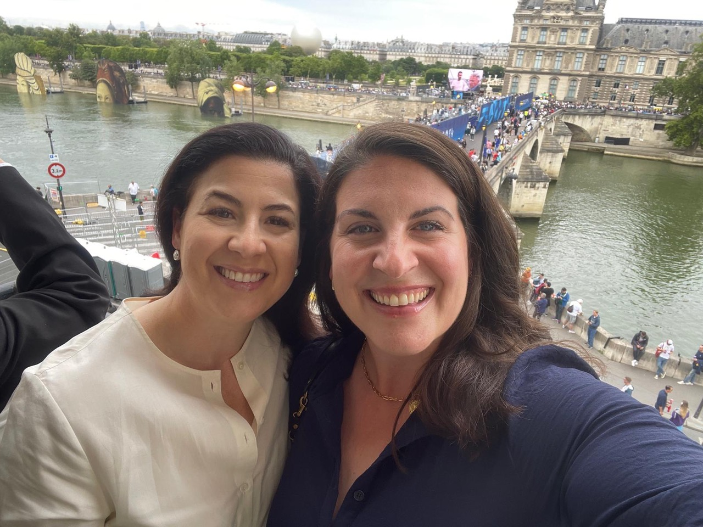
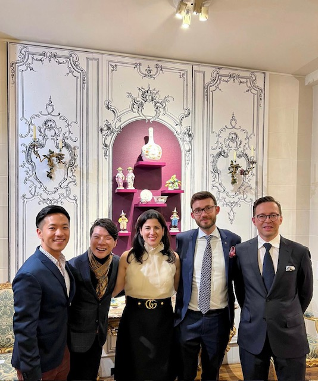
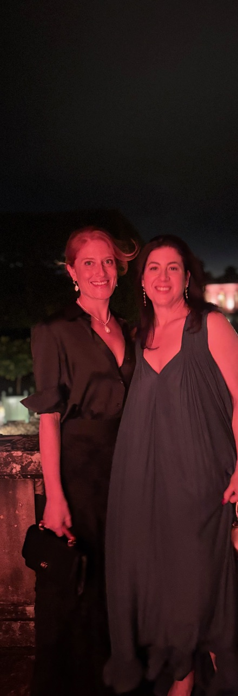
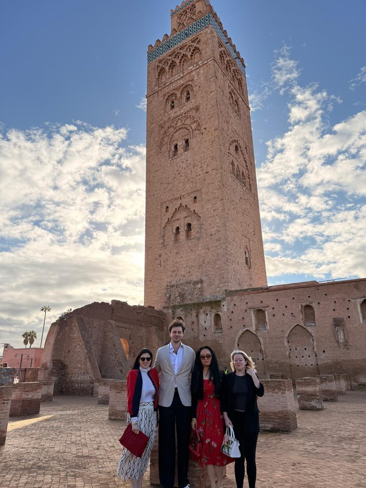

Dr. Murphy: Tell me about your childhood in Chicago. What was it like growing up in the city?
Dr. Tilles: I very much enjoyed growing up in downtown Chicago and have many wonderful memories including going to the Bulls championship games, the Art Institute of Chicago and the theater. My family has very strong connections to the City. My mother is very involved with the Shakespeare Theater at Navy Pier; my father was born and raised on the West Side and made his whole career in the city.
I decided, however, to finish high school overseas. It was not because I was an unhappy or a difficult child but just knew that I wanted to move to Europe sooner rather than later. I started learning French when I was 4 years old—basic songs and vocabulary, and even then, I knew there was a European soul within me. My mother is the same, so she was always very supportive. I started at Latin School in kindergarten, and I left after my sophomore year to attend The American School in Switzerland, also referred to as TASIS, in Lugano. The idea was to go for a junior year abroad but ended up staying for both my junior and senior year then graduating from TASIS.
That experience in Switzerland really opened a lot of doors and helped me think more broadly. I took my first art history classes there and became even more proficient in French. As wonderful as my academic training in Chicago was, those two years abroad in high school really solidified my interests and put me in a stronger position to develop a global career.
Dr. Murphy: Although I never studied abroad, both sides of my family had a global connection. My father was 100% Irish, and all Irish are at least romantically attached to Ireland no matter how distant the relationship. My mother’s side was a real Eastern European mix, everyone had an accent. Although my mother was born in the United States, she didn’t speak English until she went to school. You said you grew up downtown. What neighborhood did you grow up in?
Dr. Tilles: While at the Latin School, we were living on State and Oak Street, very close to the school. Later, my parents moved a little bit farther north, closer to Lincoln Park, but that was after I finished high school in Switzerland.

Dr. Murphy: How did your love for French culture grow as you pursued French cultural studies as an undergraduate and later a doctorate in art history?
Dr. Tilles: Most students at Wellesley major in political science or economics, its claim to fame. I took my first economics class freshman year, failed miserably and said, “OK, well, let’s try what I really love…art history.” I took my first French decorative arts class my sophomore year with Professor Eleanor DeLorme, who really shaped my career. She specialized in French decorative arts, and I fell in love with that specialty—18th- and early 19th-century French decorative arts. I studied French literature and other related classes. Wellesley has a junior year abroad program in Aix-en-Provence and has an official exchange with the Aix-Marseille Université where I took more classes that related to my major. During the summer before and after Aix, I lived in Paris doing several internships in the art world.
After Wellesley, my career focused on the decorative arts. Just to clarify: decorative arts, in contrast to fine arts, are three-dimensional works of art, or objets d’art in French, that include porcelain, silver, furniture, and bronze. At the time, there were two programs in the United States that offered graduate work in decorative arts: one is the Cooper Hewitt in New York, the other is the Bard Graduate Center. I ultimately applied and was accepted to Bard because they had the possibility of staying on after a master’s to do a doctorate, the only such program in the United States. I actually deferred a year, came back to Paris, and studied at the École du Louvre—a one-year pre-master’s to the Bard program—focusing on comprehensive art history and architecture from antiquity to contemporary, which allowed me to fill in some of the gaps in art history that I didn’t take at Wellesley. I was also working at the Château de Malmaison at the same time that year where I was assisting with an exhibition on Empire jewelry. It was supposed to be a year “off,” but it was very much a year “on” of both school and work. It was a wonderful experience to work in a French museum—it is a national collection, not a private collection—and also taking classes at the famous École du Louvre.
Following that great experience, I went back to New York, did my two-year master’s at the Bard Graduate Center in decorative arts, and decided not to do a doctorate right away, preferring to work for a while. That was a lot of school, and I wanted to have some practical experience and was fortunate enough to receive a job offer from the Museum of Fine Arts (MFA) in Boston after Bard. I wanted to work in a museum and was so fortunate to be able to do that.

Dr. Murphy: After almost eight years at the MFA you went back to school, but this time, in the United Kingdom for your doctorate. Why did you go that route, to study French decorative arts in Great Britain?
Dr. Tilles: I was ready to go back to school and figured it was “now or never” because at that time I was already in my 30s. To be quite honest with you, primarily because after a year at the École du Louvre and a two-and-a-half-year master’s at the Bard Graduate Center, the thought of a 10-year doctorate program was not really appealing, and the U.K. system has a faster track. You must have a very clear idea of what you want to research and write your thesis on because there are no classes or exams. You hit the ground running and go right into your research.
Dr. Murphy: Many of the European PhD graduate programs are very much like what you describe. You just jump right into your research plan, defend your thesis in three years and you’re out, hopefully. If I had to do it all over again, I would have elected to do a three-year European PhD program in epidemiology after my M.D. You already knew what you wanted to do your thesis on at that point?
Dr. Tilles: Yes. I was very interested—and still am—in the history of transatlantic collecting during the Gilded Age (19th- and early 20th-century) between Europe and the United States. While at the Bard Graduate Center, I did a one-year fellowship in the European Sculpture and Decorative Arts Department at the Metropolitan Museum of Art, assisting with a jewelry exhibition on cameos. I was able to access the rich archives and research material and knew about a collection that the Met had in their possession but didn’t realize until working there that nothing had been written on this collection since 1930 and that there was a real need for someone to do some deeper research into this story.
The topic of my thesis involved the collection of George and Florence Blumenthal. He was a German-Jewish banker born in Frankfurt, came to the U.S. in the 1870s, self-made, ultimately became the senior partner of Lazard Frères. He married a very fascinating woman who was born in California but was half French, coming from a family of bankers and art collectors. She was one of eight children; many of her sisters and brothers lived in Paris in the 1920s and knew Gertrude Stein, Georgia O’Keeffe, Edward Steichen—this amazing circle in Paris during that wonderful Roaring ‘20s period. Her sister was also a founding member of the San Francisco Museum of Modern Art. The Blumenthals married at the turn of the 20th century and built an amazing house in New York, which is sadly no longer standing, and they had two houses in France, so a cross-Atlantic collection story. He became the first Jewish president of the Metropolitan Museum in the 1930s after she died and built the Cloisters with David Rockefeller. There’s a really intriguing American museum history story there with a lot of philanthropy both in New York and France.
The Blumenthals were very philanthropic. They did not have any surviving children, their only child died very young. Their name is more well-known in France for a variety of reasons including having a street named after Florence, and a wing of the Necker Hospital, where their child was treated, named after them. Some of their collection was donated to the Louvre and they supported the Sorbonne. The Blumenthal name, of course, is forever synonymous with being one of the presidents of the Met, however they have been somewhat marginalized in the history of collecting. The Blumenthals were an incredibly interesting couple—and especially Florence, who collected avant-garde contemporary art during the 1920s in Paris. She also created an association for young, emerging artists. She was friends with a lot of the artists who exhibited at the 1925 Exhibition in Paris and are now being celebrated 100 years later. She was a jewelry collector, especially Cartier. Cartier recently did an exhibition at the Victoria and Albert Museum with some of the pieces that were in her collection. The Blumenthals warrant more attention. Having finished my doctorate six years ago, I am now publishing a book on them in my spare time.
Dr. Murphy: Incredible! By the way, the Necker Hospital is one of the best children’s hospitals in Europe. Being part of that French art scene at the time, that’s an amazing story in itself.
Dr. Tilles: It was a very interesting circle during that time and very artistic. It was a most wonderful moment for the arts and culture.

Dr. Murphy: Tell us about L’ÉCOLE, School of Jewelry Arts and how you ended up there as a senior project manager.
Dr. Tilles: After my doctorate in the U.K., I was hired by Hillwood Estate, Museum & Gardens in Washington, D.C., to be the curator of 18th-century Western European art, including decorative arts and paintings. I worked on three exhibitions there and a new publication on the collection. My thought was it would be really interesting to work with a smaller collection—20,000 objects of primarily 18th- and 19th-century decorative arts, which was my field. There are so few institutions in this world that specialize in French decorative arts, so it was a really good fit. After five years in Washington, I again missed Paris and moved back in the summer of 2022, and shortly thereafter, an opportunity presented itself at L’ÉCOLE.
L’ÉCOLE was created in 2012 with support from Van Cleef & Arpels, to share the history of jewelry culture to the general public through various activities: courses, workshops, talks, children’s workshops, exhibitions, books and podcasts. I had taken jewelry classes there in the past and had seen some of the exhibitions and had their catalogs. I met the new president of L’ÉCOLE in 2023, and she was telling me about the expansion that L’ÉCOLE was going through. Van Cleef itself has also gone through a very large expansion, and L’ÉCOLE was trying to keep up in sharing jewelry culture around the world. They are not advertising exclusively Van Cleef jewelry. We are obviously a marketing tool for the brand, but it is really about the history of all jewelry culture, and they were creating a new department of exhibitions because the exhibitions were growing so quickly and they were opening campuses all over the world. Paris is the hub, but they opened their first international campus in Hong Kong in 2018, Shanghai in 2023 and then Dubai. Next year we will open a campus in Tokyo. Maybe someday, the U.S.?
L’ÉCOLE organizes exhibitions, jewelry classes on art history, gemology and savoir-faire—the craftsmanship—and publishes books and catalogues. We also have a library and a bookstore. It was a clever way to use my background in decorative arts and love of jewelry, which was always incorporated into the history of decorative arts. Working in an institution that is museum-like in its exhibition approach, but not a museum, has been an ideal fit for me. We do have a jewelry collection, mostly for study and demonstration for classes, and primarily borrow pieces from other museums and private collectors for our exhibitions.
Again, we’re not a museum, we are part of Van Cleef & Arpels, which has its advantages in this day and age as many museums are having financial difficulty. I think the general public loves exhibitions on fashion and jewelry. They can’t get enough, as demonstrated by the attendance at our exhibitions. The financial support from Van Cleef means that we can do these wonderful projects all over the world and travel these exhibitions to different audiences and different campuses. I was recruited to be part of this new team with a new director and a new president and all these new schools. So, I started at L’ÉCOLE in January of 2024, and I think I’m on my way! The rhythm is quite quick. We only have about 6–8 months to prepare an exhibition, which—again, compared to American institutions—is a fraction of the time, so the pace and the pressure is ten times greater.
Dr. Murphy: Can people just go to L’ÉCOLE? Can you just walk in?
Dr. Tilles: Absolutely. It is open to anyone and everyone of all ages. The school, when it first opened, was very briefly in Place Vendôme at the Hôtel de Ségur—then moved to nearby rue Danielle Casanova. Because Van Cleef has expanded so quickly, that building was taken over by our workshops as they needed more space to produce the jewelry, which is in such high demand. We now have a beautiful new campus in the ninth on Boulevard Montmartre, which is very close to Drouot and not so far from the Palais Royal and the Opera. We are in this beautiful mansion called the Hôtel de Mercy-Argenteau, the oldest preserved residence in the Grands Boulevards district of Paris and a classified monument. We are renting and have most of the first floor.
There’s a fascinating history about that building. It was built in the late 18th century and became the Austrian ambassador’s residence, the same ambassador who was responsible for bringing Marie Antoinette to Paris to marry Louis XVI. We all know how that ended!
Today, the building is a mix of office space and L’ÉCOLE. Our exhibitions are completely free. We have the largest bookstore dedicated to the history of jewelry in Europe and a library which is open to the public by reservation. L’ÉCOLE is really known for their jewelry classes, whether it’s jewelry making, art history, savoir-faire, and gemology classes. There are also classes for children and online conferences. It’s quite an ambitious program.

Dr. Murphy: Is it in English or French? Both?
Dr. Tilles: Classes are offered in both, and the exhibition is always bilingual, as are the exhibition catalogs. We do two exhibitions a year per campus—so two in Paris and two in the other countries—and sometimes they travel but they’re always slightly different. You don’t have to have any prior knowledge of jewelry to enjoy. The exhibitions are incredibly well done and focus on the history of all jewelry, not just Van Cleef. I highly recommend a visit to anyone.
Dr. Murphy: Let’s switch gears a little. Tell me about life in Paris, where you live and what a typical day looks like—sunup to sundown.
Dr. Tilles: Well, I live in the 7th as you do, and fortunately, just across the bridge from the Louvre, so I can walk to work in 10 minutes and am really close to Saint-Germain and the galleries in the 6th and 7th, but also just across the street from the Tuileries. It’s a really wonderful location. I’m close to the Musée d’Orsay and the Luxembourg Museum and take advantage of the proximity to a lot of wonderful arts exhibitions and institutions nearby.
My typical workday involves walking to work, weather permitting. We usually start around 9:30 am and stay until about 7:00 pm. The French love to take a lunch break and go off to a nearby bistro or café. Some days I walk back and forth a lot because my office is actually on rue de la Paix, so it is not in the same building as the exhibition space. I may go to our library or visit another Van Cleef building for meetings or training. I travel quite a lot for this job, as we have exhibitions in Dubai, Hong Kong and Shanghai. Now I am currently focusing on an exhibition that opens in Paris in June and another exhibition in Qatar this October. After work I walk back home and usually go to a yoga class.
Dr. Murphy: Did you find anything particularly hard or challenging when moving full-time to France?
Dr. Tilles: In the beginning, it’s a lot of administration—the visa, taxes, all that fun stuff. There were some barriers at work, like using a French keyboard on my computer. That took some adjusting, but now it’s fine. In Paris, I’m one of very few non-French on staff and it just takes them a while to believe that you are going to stay. They tend not to open up to you until they know that you are going to be around for the long haul. They are lovely though, and very polite and welcoming. I think it just takes a little time to build trust. We are a small office with about 70 people, but we are like a family.
Dr. Murphy: Everybody I have interviewed for this series has been in that same position you are in, including myself. I was the only American in my office. There were people from other Francophone countries, but I was the only American guy and was “responsible” for everything going on in America. I felt like an ambassador.
Dr. Tilles: I do get asked questions about American politics and I say, “You know, look, I don’t know. I’m not there. I’m more concerned with what’s going on in France.”
Dr. Murphy: What does your social life look like? Do you socialize more with French people or expats or a mixture?
Dr. Tilles: It is a mix. I feel there’s a tremendous change and influx of different cultures and nationalities moving to Paris. In addition to French, I have Italian, Spanish, American, and British friends. It’s very international. The yoga community, where I spend a lot of time, is also very international.
I am the co-chair of the French junior board of the World Monuments Fund, a wonderful organization committed to the protection of global heritage which has expanded my knowledge of cultural heritage and allowed me to travel and meet fellow members and communities all over the world. I’ve also joined some other groups like the American Club of Paris, which again, are mostly Americans, but have been expats for up to 30 years. We have a lot of similar experiences in that we understand both cultures, wanted to move to France, and have mixed backgrounds. So, I would say it’s a real mix because my professional life is French and my social life is more international.

Dr. Murphy: For centuries, Americans have been falling in love with France, especially its arts and culture. Why do you think that fascination runs so deep?
Dr. Tilles: I think it is because France and America have had a close connection since the birth of America, and because a lot of that has to do with France’s early support. I think ambassadors and diplomats have fallen in love with France, not just Paris, going back to the 18th century. The sister city connection between Chicago and Paris, at least from the Chicago point of view, has helped promote this great rapport.
I also think the wine, cuisine, art, and the climate is a draw. It is so rich and diverse for a country that is relatively small. The fact that you can get from the north to the south of the country in less time than it takes to get from New York to Chicago is also appealing. It’s easier to travel almost anywhere in Europe from France by train, and the trains work. The cost of living is not as high as several cities in the U.S.
Dr. Murphy: What might surprise people the most about the relationships between French and American museums and cultural institutions?
Dr. Tilles: They need each other. I was very lucky that the two institutions that I’ve worked for the longest amount of my career in the States had wonderful relationships with other French museums. There was a lot of exchange with loans and partnerships and traveling exhibitions and conferences. There continue to be many French curators and scholars recruited for director or curatorial positions in the States, because it’s a very prestigious coup.
Right now, many of these museums are having a very hard time financially, and as the French state has also cut back on financial support, funding is tight. A lot of them, like the Louvre and Pompidou, are in need of renovation. To raise funds, several French institutions have created American friend groups, as well as satellite museums in other countries featuring blockbuster shows with partners in the U.S. There is a strong rapport between institutions with much generosity in lending artwork back and forth from French and American museums.
Going back to Chicago, there was a recent exhibition that Gloria Groom curated on the history of collecting Impressionism in Chicago in the 19th century that became the foundation of the collection at the Art Institute. Hillwood is another example: Marjorie Merriweather Post was a huge Francophile and collector of French decorative arts, and her daughter lived in Paris and donated pieces from her mother’s collection to Versailles. Post was collecting French art until she died in the early 1970s, not so long ago.
I think there is a strong connection, and it is clear we both need each other. The museums are having a really hard time right now—it’s not an easy time and obviously the arts are not as well endowed by our government either. Everyone needs to help each other if they can.

Dr. Murphy: Final question, which I ask everyone I interview. What top three places would you recommend a Chicagoan visit when they come to Paris? Considering most of our readers have been to Paris at some point in the past, the perspective from the Chicago expats living here offers a different and more personal and unique view.
Dr. Tilles: Well, I must make a little plug for L’ÉCOLE and the Hôtel de Mercy-Argenteau because it is a fascinating place that enough people do not know about. You do have to book online, but it’s totally free. The classes are not free though, there is a fee, but to visit the exhibition space, the bookstore and library are open to anyone at no charge.
I have a real love of the Musée Nissim de Camondo, which is a smaller house museum that has a lot of decorative arts very near the Parc Monceau. Unfortunately, it’s not a great time to recommend this because it is closed for renovation, so maybe it is something to put on the list in a few years’ time. Another is the Château de Bagatelle, that was built by Comte d’Artois, who was the younger brother of Louis XVI. It was built in only 64 days, which is amazing in itself. It is a little jewel—a gem—pavilion. It’s not gigantic. It was built as a result of a bet between Marie Antoinette and the Comte d’Artois—how fast he could build this little house? It is really a hunting lodge in the Bois de Boulogne, so it is in the 16th arrondissement in the beautiful parks of Boulogne. The beautiful gardens were restored, some of the interior—the first floor of the château—was already restored and they are working on the second floor, but it is open and they’re trying to bring back some of the original furnishings to the house. It’s another less well-known or publicized place. It belongs to the Fondation Mansart, who is also restoring the Villa Windsor. The Villa Windsor is where the Duke and Duchess of Windsor lived after he abdicated the throne. It is not far from the center of Paris and has beautiful gardens and beautiful 18th-century French interiors. There is an effort to bring these smaller villas back to life.
Dr. Murphy: Thank you very much, Rebecca. You have had an amazing career trajectory, and I have enjoyed hearing about your life in France and learning about decorative arts.
Dr. Tilles: Thank you for having me.